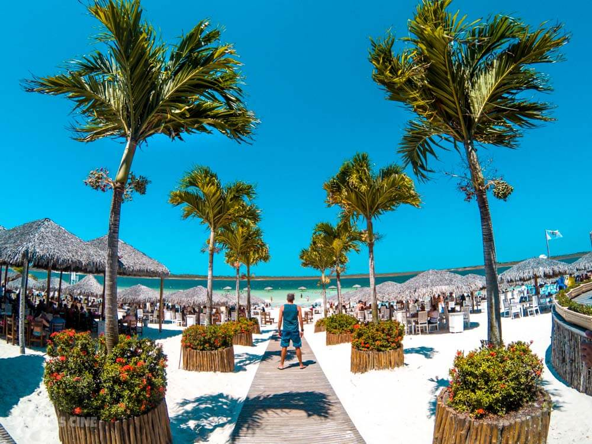
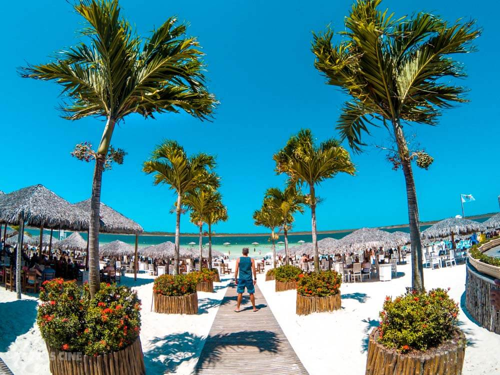
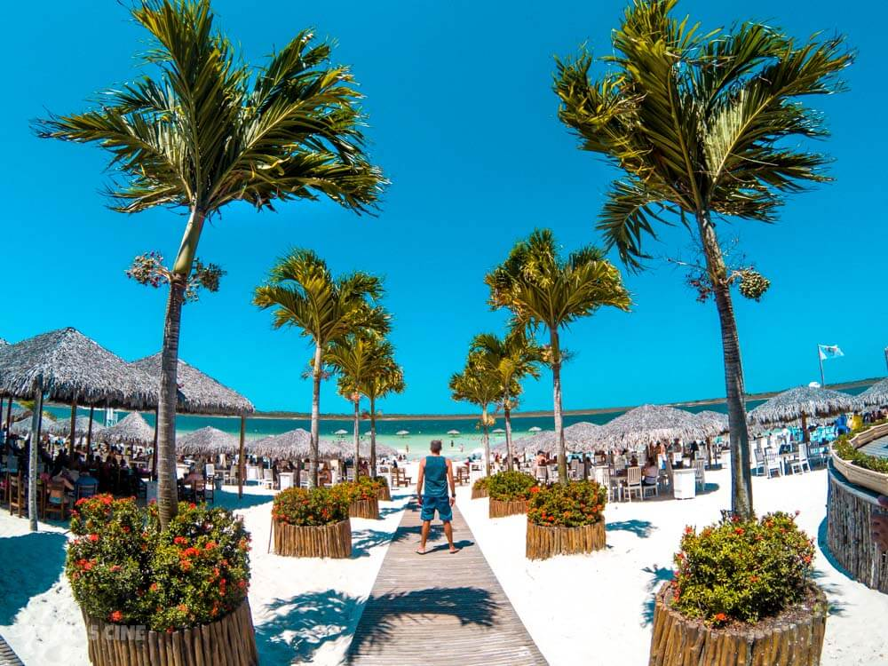

Jericoacoara é uma praia cearense que fica, aproximadamente, a 300 km da capital, Fortaleza. Até o ano de 1985, o lugar era apenas uma isolada aldeia de pescadores, escondida entre imensas e móveis dunas. Daí então o turismo foi descoberto. Jericoacoara possui cenários esplêndidos. Cavada entre enormes dunas e o mar, é um dos poucos lugares no Brasil ond é poissível asssitir ao sol nascer e sê por no oceano, devido a sua localização peninsular. A duna mais próxima da vila é ritualisticamente ocupada pelos turistas para assistir ao pôr-do-sol, devido a sua grande altura e posição privilegiada frente ao mar. Ao redor da vila enormes surgem e desaparecem com a constante ação do vento, popularizando o sandboard na região. Jericoacoara conta com praias de enseada e mar calmo, de mar aberto e ondas grandes (quase propícias ao surfe) e praias rochosas. O windsurf encontra grande apelo nessas praias cuja maior extensão é de águas calmas e vento forte. Por ter sido declarada uma Área de Proteção Ambiental (APA) e, desde 2002, transformada em PARNA (Parque Nacional), a construção de rodovias e estradas bem como qualquer tipo de pavimentação- é proibida em Jericoacoara. O acesso á vida é limitado pelas dunas e normalmente feito por um veículo adequado. As companhias de turismo que fazem o transporte até a cidade utilizam um ônibus comum de Fortaleza até Jijoca, onde a estrada mais próxima termina, e então uma jardineira, veículo de grande porte com tração nas quatros rodas. Em 1987, A Praia de Jericoacoara foi considerada uma das dez praias mais bonitas do mundo pelo The Washington Post. Em 1997, A Praia de Jericoacoara foi cenário do filme A Ostra e o Vento, dirigido por Walter Lima Jr. Em 1998, a energia elétrica passou a ser provida por uma rede subterrânea, substituindo os geradores que iluminavam apenas alguns pontos da aldeia.
